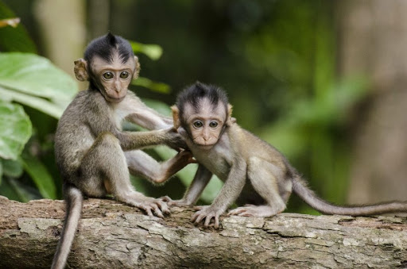

Мавпи
Мавпи — несистематична група приматів, яка за визначенням загалом збігається з обсягом вищих приматів, але за винятком людини. Ареал поширення: тропіки та субтропіки Африки, Південної Азії та Південної Америки, південь Північної Америки.
Обсяг поняття
Під словом «мавпи» розуміють одне з двох:
- всіх, за винятком людини, представників ряду приматів (Primates);
- у вужчому сенсі мавпами вважають ті види, які відносилися підряду «справжніх мавп» (Simiae), яких у нині застарілій класифікації протиставляли напівмавпам (Prosimiae).
Термін має загалом тільки побутове значення, і є не науковим.
Характеристики
Для мавп характерні такі типові для приматів ознаки:
- на пальцях пласкі нігті (зрідка кігті);
- бінокулярний зір;
- одна пара грудних сосків;
- протиставлений великий палець (палюх);
- морда і кисті верхніх кінцівок здебільшого не вкриті шерстю;
- кінцівки добре пристосовані для лазіння по деревах;
Клаcифікація
Новіші систематики об'єднують вищих або справжніх мавп і довгоп'ятів до підряду сухоносих мавп, а решту — до підряду мокроносих мавп
Вищі мавпи, у свою чергу поділяються на:
- широконосих мавп, або мавп Нового Світу
- вузьконосих мавп, або мавп Старого Світу
У широконосих є широка перетинка між носовими отворами, хвіст завжди довгий і здатний чіплятися за гілки. У вузьконосих мавп вузька носова перетинка, хвіст не чіпкий або його зовсім немає.
Останні, вузьконосі, у свою чергу, поділяються на дві групи родин:
- мавпуватих
- людинуватих
Через те, що до останньої групи також входить людина, яка не вважає себе мавпою, група мавп не є монофілетичною і тому не вважається таксоном.
Мавпи та людина
Багато видів мавп відомі через різноманітні відносини з людиною. Деяких з них утримають як домашніх тварин,
інших використовують як модельний організм у лабораторних дослідженнях і космічних експериментах.
Часто на
них полюють через загрозу сільському господарству або використовують для допомоги інвалідам. Мавпи також грають
символічну роль у багатьох релігіях та легендах, де зазвичай вони є символом винахідливості та пустощів.